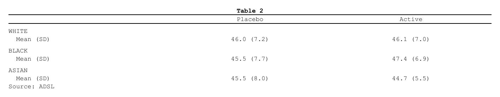

The second path. This article is about bringing a table you already have. When the statistics are in a cards / cardx ARD, the recommended route is a table plan – see Get started and Tables from an ARD.
An rtables
table – including the tables tern’s analysis
functions build, which are rtables objects – goes to RTF through
as_rtftables(), as it is.
From an rtables table to RTF
as_rtftables() also accepts any rtables
VTableTree – including the tables produced by
tern analysis functions, which are rtables objects.
They are read through formatters::matrix_form(), so nested
column splits become spanning headers, the row-label stub keeps its
indentation, and the titles / footers / referential footnotes flow
through. In-cell footnote marks {N} are rewritten to
^{N}.
library(rtables)
#> Loading required package: formatters
#>
#> Attaching package: 'formatters'
#> The following object is masked from 'package:base':
#>
#> %||%
#>
#> Attaching package: 'rtables'
#> The following object is masked from 'package:utils':
#>
#> strShow code
lyt <- basic_table(title = "Table 2", main_footer = "Source: ADSL") |>
split_cols_by("ARM") |>
split_rows_by("RACE") |>
analyze("AGE", afun = function(x) {
in_rows("Mean (SD)" = rcell(c(mean(x), sd(x)), format = "xx.x (xx.x)"))
})
set.seed(1)
adsl <- data.frame(
ARM = rep(c("Placebo", "Active"), each = 30),
RACE = rep(c("WHITE", "BLACK", "ASIAN"), 20),
AGE = rnorm(60, 45, 8)
)
tern_like <- build_table(lyt, adsl)
doc <- rtf_document() |>
rtf_section(page = 1, header = NULL, footer = NULL) |>
rtf_tables(as_rtftables(tern_like))
out <- tempfile(fileext = ".rtf")
generate_rtfreport(doc, out, overwrite = TRUE)
file.exists(out)#> [1] TRUE
The rtables read tokens are "col_header",
"alignment", "spanning",
"titles", "footnotes", "indent",
"footnote_marks"; read = TRUE (default) reads
them all.
Splitting a long table across pages
as_rtftables() pages the table: split and
max_rows say how, as for any source – see Paginating with as_rtftables().
Where next
- From gt and gtsummary — the same for a gt or gtsummary table
-
Importing tables — every source
as_rtftables()reads - The pharmaverse catalog — tern tables and others, to RTF